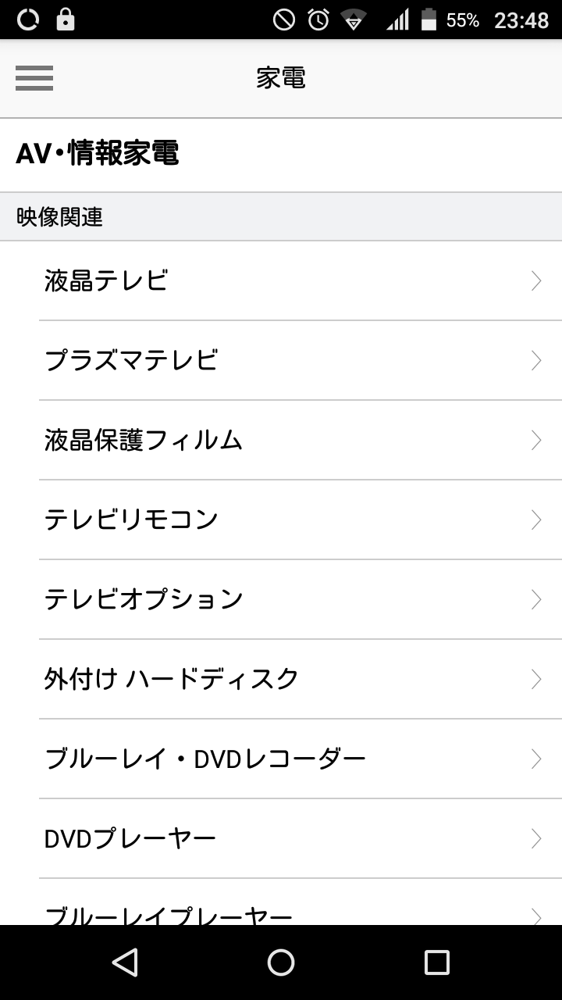

RecyclerView + DataBinding で実装したら
Kotlinで書いて良かったと思えた。
(Javaだと辛そう。。。)
Kotlinでどのように実装し、
どのように良かったご紹介。
リスト表示だけどViewが微妙に違う。

sealed class ListItem {
abstract fun getType(): Type
enum class Type(val id: Int) {
Caption(10), SubCaption(20), Category(30);
companion object {
fun from(id: Int): Type {
return values().first { it.id == id }
}
}
}
class CaptionItem(val title: String): ListItem() {
override fun getType(): Type { return Type.Caption }
}
class SubCaptionItem(val title: String): ListItem() {
override fun getType(): Type { return Type.SubCaption }
}
class CategoyItem(val title: String): ListItem() {
override fun getType(): Type { return Type.Category }
}
}
fun getItemCount()fun getItemViewType(position: Int): Intfun onCreateViewHolder(parent: ViewGroup?, viewType: Int): RecyclerView.ViewHolder? fun onBindViewHolder(holder: RecyclerView.ViewHolder?, position: Int)sealed classのListでデータを持つ
class CategoryListRecyclerViewAdapter
(private var items: List<CategoryListViewModel.ListItem>)
: RecyclerView.Adapter<RecyclerView.ViewHolder>() {}
フラットなリストで持っているので返すだけ
override fun getItemCount() = items.count()
enumのidを返す
override fun getItemViewType(position: Int): Int {
val item = items[position]
return item.getType().id
}
enum毎にViewHolderを返す
override fun onCreateViewHolder(parent: ViewGroup?, viewType: Int): RecyclerView.ViewHolder? {
parent ?: return null
val itemType = CategoryListViewModel.ListItem.Type.from(viewType)
when (itemType) {
CategoryListViewModel.ListItem.Type.Caption -> {
val binding = CaptionItemBinding.inflate(LayoutInflater.from(parent.context), parent, false)
return CaptionItemViewHolder(binding)
}
CategoryListViewModel.ListItem.Type.SubCaption -> {
val binding = SubCaptionItemBinding.inflate(LayoutInflater.from(parent.context), parent, false)
return SubCaptionItemViewHolder(binding)
}
CategoryListViewModel.ListItem.Type.Category -> {
val binding = CategoryItemBinding.inflate(LayoutInflater.from(parent.context), parent, false)
return CategoryItemViewHolder(binding)
}
}
}
ViewHolderはこんな感じ
private class CaptionItemViewHolder
(val binding: CaptionItemBinding)
: RecyclerView.ViewHolder(binding.root) { }
private class SubCaptionItemViewHolder
(val binding: SubCaptionItemBinding)
: RecyclerView.ViewHolder(binding.root) { }
private class CategoryItemViewHolder
(val binding: CategoryItemBinding)
: RecyclerView.ViewHolder(binding.root) { }
ViewHolderとデータをCastしてデータをバインド
override fun onBindViewHolder(holder: RecyclerView.ViewHolder?, position: Int) {
val item = items[position]
when {
holder is CaptionItemViewHolder && item is CategoryListViewModel.ListItem.CaptionItem -> {
@Suppress("MISSING_DEPENDENCY_CLASS")
holder.binding.item = item
}
holder is SubCaptionItemViewHolder && item is CategoryListViewModel.ListItem.SubCaptionItem -> {
@Suppress("MISSING_DEPENDENCY_CLASS")
holder.binding.item = item
}
holder is CategoryItemViewHolder && item is CategoryListViewModel.ListItem.CategoyItem -> {
@Suppress("MISSING_DEPENDENCY_CLASS")
holder.binding.item = item
}
}